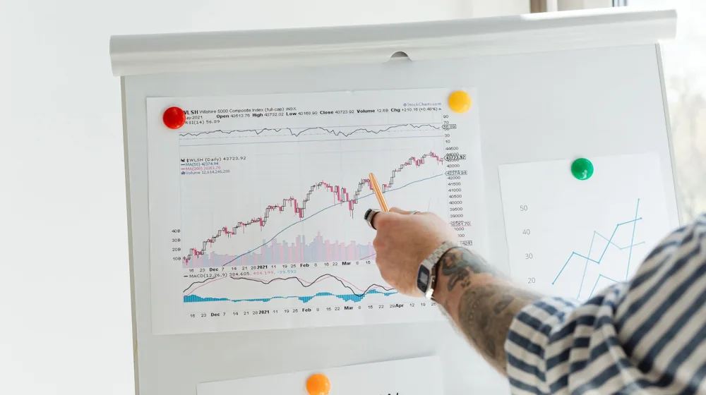

코스피지수, 오늘 왜 난리일까? 숨겨진 시장의 진짜 얼굴
사진: Aedrian Salazar / Pexels (무료 이미지, 출처 표기)
급변하는 코스피지수, 도대체 무슨 일이?

오늘 아침, 평소 경제 뉴스에 큰 관심이 없던 분들까지도 깜짝 놀라게 만든 검색어가 있었습니다. 바로 ‘코스피지수’입니다. 이 평범해 보이던 숫자가 대체 왜 대한민국 인터넷을 들썩이게 만들었을까요? 단순히 주가가 오르내리는 것을 넘어, 그 이면에는 우리가 미처 알지 못했던 경제의 비밀과 숨겨진 이야기가 가득합니다.
어제까지만 해도 잠잠했던 코스피가 갑자기 특정 방향으로 크게 움직였다면, 분명 강력한 트리거가 있었을 겁니다. 해외 증시의 급등락, 예상치 못한 기업 실적 발표, 혹은 정부의 새로운 경제 정책 발표 등 다양한 요인들이 복합적으로 작용하여 시장의 심리를 한순간에 뒤흔들었을 가능성이 큽니다.
코스피, 단순한 숫자가 아니다? 우리 삶에 미치는 영향
코스피지수는 단순히 증권사의 전광판에 뜨는 숫자가 아닙니다. 이것은 대한민국 경제의 건강 상태를 보여주는 가장 중요한 지표 중 하나입니다. 코스피가 오르면 기업의 가치가 상승하고, 이는 투자와 고용으로 이어져 전반적인 경제 활성화에 긍정적인 신호를 보냅니다.
반대로 코스피가 하락하면 기업들의 자금 조달이 어려워지고, 소비 심리가 위축되며, 심지어 내 집 마련의 꿈이나 노후 자금 계획에도 간접적인 영향을 미칠 수 있습니다. 은행의 대출 금리, 환율, 그리고 우리가 매일 사용하는 물건의 가격까지, 코스피의 움직임은 생각보다 더 넓은 범위에서 우리의 일상과 지갑에 영향을 미치고 있습니다.
역사 속 코스피의 드라마: 위기와 기회의 순간들
코스피의 역사는 대한민국 경제 성장과 궤를 같이하는 드라마틱한 기록으로 가득합니다. 1997년 외환 위기 당시 코스피는 한없이 추락하며 수많은 국민에게 고통을 안겨주었지만, IMF 극복 과정에서 다시 반등하며 놀라운 회복력을 보여주었습니다.
2008년 글로벌 금융 위기 때도 코스피는 크게 출렁였지만, 이후 'IT 버블'과 같은 새로운 성장 동력을 찾아내며 다시 한번 도약의 발판을 마련했습니다. 이러한 위기와 기회의 순간들은 코스피가 단순한 숫자가 아니라, 우리 국민들의 희로애락이 담긴 살아있는 경제 지표임을 증명합니다.
개미 투자자들을 위한 코스피 활용법: 똑똑한 시장 읽기
코스피지수의 움직임을 이해하는 것은 비단 투자자들만의 전유물이 아닙니다. 일반인들도 코스피의 흐름을 읽는 법을 알면 더 현명한 경제생활을 할 수 있습니다. 물론 예측은 어렵지만, 어떤 요인들이 코스피를 움직이는지 알면 불확실한 시장 상황에서도 흔들리지 않는 중심을 잡는 데 도움이 됩니다.
다음은 코스피지수에 영향을 미치는 주요 요인들을 정리한 표입니다.
이러한 요인들을 복합적으로 이해하면, 갑작스러운 코스피의 움직임에 당황하지 않고 왜 이런 현상이 일어났는지 합리적으로 추론할 수 있게 됩니다. 중요한 것은 맹목적인 추종이 아닌, 균형 잡힌 정보 습득과 자신만의 투자 원칙을 세우는 것입니다.
앞으로 코스피, 어디로 향할까? 전문가들이 말하는 미래
그렇다면 앞으로 코스피지수는 어디로 향할까요? 섣불리 단언할 수는 없지만, 많은 전문가들은 글로벌 경제의 불확실성 속에서도 국내 기업들의 경쟁력 강화와 새로운 성장 동력 발굴이 중요하다고 입을 모읍니다. 특히 인공지능, 반도체, 바이오 같은 첨단 기술 산업의 성장이 코스피의 미래를 좌우할 핵심 변수가 될 것입니다.
물론 단기적인 변동성은 늘 존재하겠지만, 장기적인 관점에서 대한민국 경제의 펀더멘탈과 기업들의 혁신 노력에 주목한다면 코스피는 여전히 매력적인 투자처이자 우리 경제의 희망을 비추는 거울이 될 것입니다. 오늘 코스피지수가 검색어 1위에 오른 것은 단순한 해프닝이 아니라, 우리 모두가 경제에 관심을 가져야 할 중요한 신호일지도 모릅니다.
🔗 이 글도 함께 보면 좋아요: 하이닉스 주가, 지금 대체 왜? 반도체 미래를 엿보는 숨겨진 열쇠
관련 추천 상품
이 포스팅은 쿠팡 파트너스 활동의 일환으로, 이에 따른 일정액의 수수료를 제공받습니다.